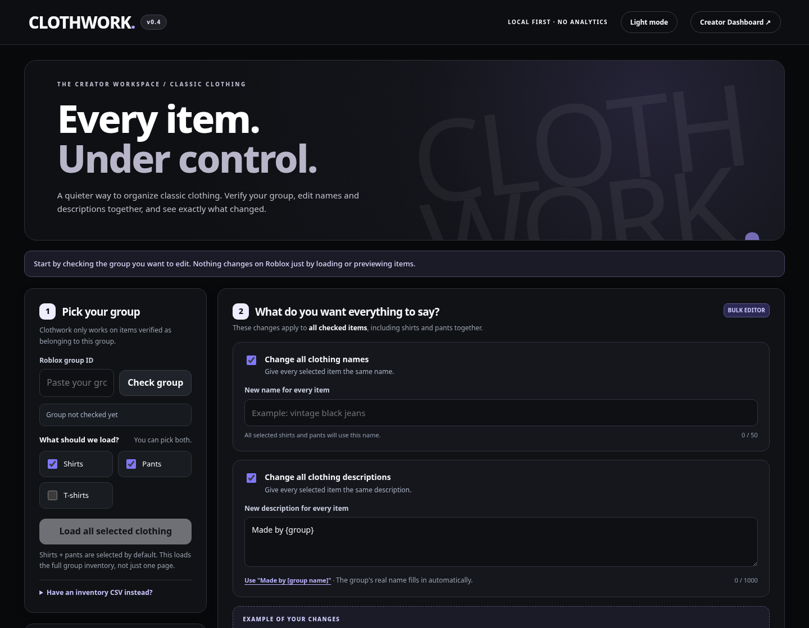

ROBLOX CLASSIC CLOTHING / INDEPENDENT PROJECT
Less busywork.
More creating.
A considered workspace for managing classic clothing. Bulk edit previews, verified group targeting and clear activity tracking — without the clutter.
Make every edit intentional.
Preview names and descriptions together before changing anything.
Know what happened.
See complete, skipped and failed counts in a quiet floating sidebar.
Local-first by design.
No analytics or accounts. Changes are reviewed in Clothwork and saved manually in Roblox Creator Hub.

Clothwork is an independent portfolio project, not affiliated with Roblox. Save edits manually in Roblox Creator Hub. Marketplace archiving is manual.